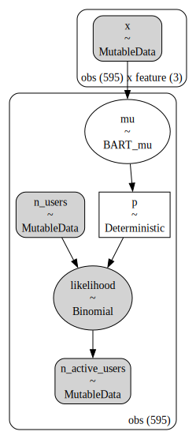

%%{init: {"theme": "white", "themeVariables": {"fontSize": "48px"}, "flowchart":{"htmlLabels":false}}}%%
flowchart TD
N[Number of Users] --> N_active[Number of Active Users]
N_active --> Retention[Retention]
Retention --> Revenue[Revenue]
PyData Berlin - July 2023
Mathematician & Data Scientist
Introduction
Bottom-Up Approaches
2.1 Shifted Beta Geometric (Contractual)
2.2 BG/NBD Model (Non-Contractual)
Simple Cohort Retention Model (GLM)
Retention Model with BART
Cohort Revenue-Retention Model
Applications
References
During January \(2020\), \(100\) users signed up for a service (cohort).
In February \(2020\), there were \(17\) users from the \(2020-01\) cohort active (e.g. did at least one purchase). The retention rate is \(17\%\).
We want to understand and predict how retention develops over time.
The main motivation is to estimate customer lifetime value (CLV).
Predict the retention of each user individually and then aggregate the results.
An individual remains a customer of the company with constant retention probability \(1 - \theta\). This is equivalent to assuming that the duration of the customer’s relationship with the company, denoted by the random variable \(T\), is characterized by the (shifted) geometric distribution with probability mass function and survivor function given by
\[f(t) = \theta (1 - \theta)^{t - 1}, \quad t = 1, 2, \ldots\]
\[S(t) = \sum_{j = t}^{\infty} f(j) = (1 - \theta)^{t - 1}, \quad t = 1, 2, \ldots\]
Heterogeneity in \(\theta\) follows a beta distribution \(\theta \sim \text{Beta}(a, b)\).
See pymc-marketing example here.
While active, the time between transactions is distributed exponentially with transaction rate, i.e.,
\[f(t_{j}|t_{j-1}; \lambda) = \lambda \exp(-\lambda (t_{j} - t_{j - 1})), \quad t_{j} \geq t_{j - 1} \geq 0\]
Heterogeneity in \(\lambda\) follows a gamma distribution \(\lambda \sim \text{Gamma}(r, \alpha)\).
After any transaction, a customer becomes inactive with probability \(p\).
Heterogeneity in \(p\) follows a beta distribution \(p \sim \text{Beta}(a, b)\).
The transaction rate \(\lambda\) and the dropout probability \(p\) vary independently across customers.
\[\begin{align*} N_{\text{active}} \sim & \: \text{Binomial}(N_{\text{total}}, p) \\ \textrm{logit}(p) = & \: ( \text{intercept} \\ & + \beta_{\text{cohort age}} \text{cohort age} \\ & + \beta_{\text{age}} \text{age} \\ & + \beta_{\text{cohort age} \times \text{age}} \text{cohort age} \times \text{age} \\ & + \beta_{\text{seasonality}} \text{seasonality} ) \end{align*}\]
where \(p\) represents the retention and \(\text{logit}: (0, 1) \longrightarrow \mathbb{R}\) is defined by \(\text{logit}(p) = \log\left(\frac{p}{1-p}\right)\).
with pm.Model(coords=coords) as model:
# --- Data ---
model.add_coord(name="obs", values=train_obs_idx, mutable=True)
age_scaled = pm.MutableData(name="age_scaled", value=train_age_scaled, dims="obs")
cohort_age_scaled = pm.MutableData(
name="cohort_age_scaled", value=train_cohort_age_scaled, dims="obs"
)
period_month_idx = pm.MutableData(
name="period_month_idx", value=train_period_month_idx, dims="obs"
)
n_users = pm.MutableData(name="n_users", value=train_n_users, dims="obs")
n_active_users = pm.MutableData(
name="n_active_users", value=train_n_active_users, dims="obs"
)
# --- Priors ---
intercept = pm.Normal(name="intercept", mu=0, sigma=1)
b_age_scaled = pm.Normal(name="b_age_scaled", mu=0, sigma=1)
b_cohort_age_scaled = pm.Normal(name="b_cohort_age_scaled", mu=0, sigma=1)
b_period_month = pm.ZeroSumNormal(
name="b_period_month", sigma=1, dims="period_month"
)
b_age_cohort_age_interaction = pm.Normal(
name="b_age_cohort_age_interaction", mu=0, sigma=1
)
# --- Parametrization ---
mu = pm.Deterministic(
name="mu",
var=intercept
+ b_age_scaled * age_scaled
+ b_cohort_age_scaled * cohort_age_scaled
+ b_age_cohort_age_interaction * age_scaled * cohort_age_scaled
+ b_period_month[period_month_idx],
dims="obs",
)
p = pm.Deterministic(name="p", var=pm.math.invlogit(mu), dims="obs")
# --- Likelihood ---
pm.Binomial(
name="likelihood",
n=n_users,
p=p,
observed=n_active_users,
dims="obs",
)In many real-world scenarios, the data is more complex and the linear model is not enough (still, we could work out useful features).
We need a more flexible model that can capture non-linearities and interactions.
We care about uncertainty.
We want to be able to iterate fast.
Interested in out-of-sample predictions.
We want to couple retention modeling with revenue modeling (CLV).
Bayesian “sum-of-trees” model where each tree is constrained by a regularization prior to be a weak learner.
To fit the sum-of-trees model, BART uses a tailored version of Bayesian backfitting MCMC that iteratively constructs and fits successive residuals.
BART depends on the number of trees \(m\in \mathbb{N}\) and prior parameters \(\alpha \in (0, 1)\) and \(\beta \in [0, \infty)\) so that the probability that a node at depth \(d \in \mathbb{N}_{0}\) is nonterminal is \(\alpha(1 + d)^{-\beta}\).
BART is implemented in pymc-bart.
\[\begin{align*} N_{\text{active}} & \sim \text{Binomial}(N_{\text{total}}, p) \\ \textrm{logit}(p) & = \text{BART}(\text{cohort age}, \text{age}, \text{month}) \end{align*}\]

%%{init: {"theme": "white", "themeVariables": {"fontSize": "48px"}, "flowchart":{"htmlLabels":false}}}%%
flowchart TD
N[Number of Users] --> N_active[Number of Active Users]
N_active --> Retention[Retention]
Retention --> Revenue[Revenue]
\[\begin{align*} \textrm{logit}(p) & = \text{BART}(\text{cohort age}, \text{age}, \text{month}) \\ N_{\text{active}} & \sim \text{Binomial}(N_{\text{total}}, p) \end{align*}\]
\[\begin{align*} \log(\lambda) = \: (& \text{intercept} \\ & + \beta_{\text{cohort age}} \text{cohort age} \\ & + \beta_{\text{age}} \text{age} \\ & + \beta_{\text{cohort age} \times \text{age}} \text{cohort age} \times \text{age}) \\ \text{Revenue} & \sim \text{Gamma}(N_{\text{active}}, \lambda) \end{align*}\]
mu = pmb.BART(
name="mu", X=x, Y=train_retention_logit, m=100, response="mix", dims="obs"
)
p = pm.Deterministic(name="p", var=pm.math.invlogit(mu), dims="obs")
lam_log = pm.Deterministic(
name="lam_log",
var=intercept
+ b_age_scaled * age_scaled
+ b_cohort_age_scaled * cohort_age_scaled
+ b_age_cohort_age_interaction * age_scaled * cohort_age_scaled,
dims="obs",
)
lam = pm.Deterministic(name="lam", var=pm.math.exp(lam_log), dims="obs")
n_active_users_estimated = pm.Binomial(
name="n_active_users_estimated",
n=n_users,
p=p,
observed=n_active_users,
dims="obs",
)
x = pm.Gamma(
name="revenue_estimated",
alpha=n_active_users_estimated + eps,
beta=lam,
observed=revenue,
dims="obs",
)

Understand retention and revenue drivers.
Factor out seasonality.
External covariates (e.g. acquisition channel).
Forecast revenue and retention (cohort lifetime value).
Causal Inference
Counterfactural analysis.
Geo experiments.
“Counting Your Customers” the Easy Way: An Alternative to the Pareto/NBD Model, see pymc-marketing example here.
How to Project Customer Retention, see pymc-marketing example here.